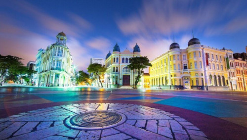

Ponto Turístico: "MARCO ZERO"
História
O Marco Zero no Recife Antigo é o lugar de referência onde a cidade nasceu e
todas as medidas oficiais de distâncias rodoviárias usam como ponto de partida.
Seu nome é, na verdade, Praça Rio Branco e fica ao lado do Porto de Pernambuco.
Pode-se dizer que ele se situa no centro histórico da cidade,
que é mais conhecido como Recife Antigo por ser a parte onde se iniciou o povoamento da capital pernambucana.
A popularização do nome Marco Zero aconteceu desde 1938,
devido à instalação do símbolo geográfico na parte central da praça.
Ele foi uma doação do Automóvel Clube de Pernambuco.
Além disso, há nela uma estátua de bronze de 2,80 metros, de autoria do escultor francês Félix Charpentier.
Ao redores
O passeio no Marco Zero no Recife Antigo acontece às margens do porto velho e permite conhecer palacetes históricos, instalações portuárias, bares, restaurantes e espaços culturais. Confira a seguir as melhores dicas do que fazer no local!
Arquitetura eclética dos prédios históricos
- Antiga sede do London & River Plate Bank
- Associação Comercial de Pernambuco
- Edifício da Caixa Cultural
Parque das Esculturas de Francisco Brennand
Em 2000, para comemorar os 5000 anos da chegada dos portugueses ao Brasil, o Marco Zero do Recife Antigo recebeu uma exposição com várias obras do artista plástico pernambucano Francisco Brennand.
Centro de Artesanato de Pernambuco
Isso porque, em um enorme galpão de 2,5 mil m², é possível admirar e adquirir trabalhos de mais de 1,8 mil artesãos de diferentes cidades pernambucanas. Sendo assim, são rendas, roupas, enfeites, acessórios, itens de decoração e outras peças que irão encher os olhos de turistas do mundo inteiro. O Centro de Artesanato de Pernambuco funciona de segunda a sábado das 9h às 19h e aos domingos, das 10h às 16h.
Museu Cais do Sertão
Para os amantes de artes e culturas, o Museu Cais do Sertão traz referências à cultura do sertão nordestino e oferece experiências interativas e sensoriais. Além disso, o espaço conta com cursos, palestras e workshops e possui exposições permanentes e temporárias sobre o tema.
Sinagoga Kahal Zur Israel e Paço do Frevo
Dois lugares diferentes e próximos ao Marco Zero do Recife Antigo e uma experiência similar. Isso porque, tanto na primeira sinagoga das Américas quanto no Paço do Frevo, você estará imerso em história e cultura. Na Sinagoga Kahal Zur Israel funciona, atualmente, o Centro Judaico de Pernambuco, enquanto o Espaço Cultural Paço do Frevo procura manter viva a tradição do estilo musical que é Patrimônio Imaterial da Humanidade, segundo a Unesco
Boemia no Marco Zero do Recife Antigo
Por último, não dá para falar do Marco Zero sem considerar as muitas opções de entretenimento nos antigos armazéns ao longo da orla. Para se ter uma ideia, são bares temáticos, restaurantes com gastronomia local e mundial e points para quem quer diversão, boa música e entretenimento. Além deles, há opções para os mais diversos bolsos e gostos também na região central do Antigo Recife, em vielas de pedra sabão e um charme único da capital de Pernambuco.